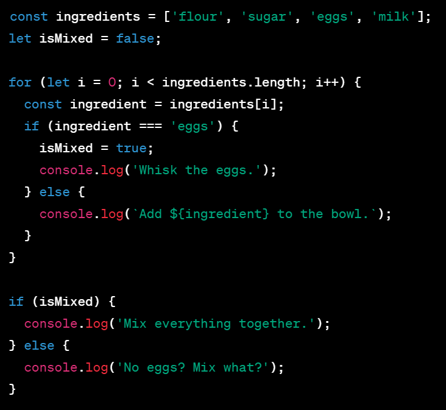

JavaScript, HTML, and CSS are like the ingredients in a recipe. HTML is like the flour, providing the basic structure. CSS is like the sugar and spices, adding the style and flavor. JavaScript is like the yeast, activating the other ingredients and bringing everything together to make something delicious.
Control flow and loops can be compared to following a recipe. The recipe tells you what to do and when to do it, like the control flow. The recipe may also have you repeat certain steps, like whisking eggs, multiple times, which is like a loop.
In this code example, we have an array of ingredients for a recipe and a variable isMixed to keep track of whether the eggs have been whisked or not. We then use a for loop to iterate over each ingredient in the array. If the ingredient is 'eggs', we set the isMixed variable to true and log a message to whisk the eggs. If the ingredient is not 'eggs', we log a message to add the ingredient to the bowl. After the loop, we use an if statement to check if the eggs have been whisked or not. If they have been whisked, we log a message to mix everything together. If they have not been whisked, we log a message asking what to mix since no eggs were whisked. This demonstrates how control flow and loops can be used to follow a recipe and repeat certain steps like whisking eggs.
The DOM is a way for programs to change the structure and content of a web page. It's like a program's way of interacting with the page. Arrays and objects are ways to store data in JavaScript. Arrays are like numbered lists, while objects are like collections of named items. Functions are blocks of code that can be reused multiple times. They can help make code easier to understand and avoid repeating the same code over and over.